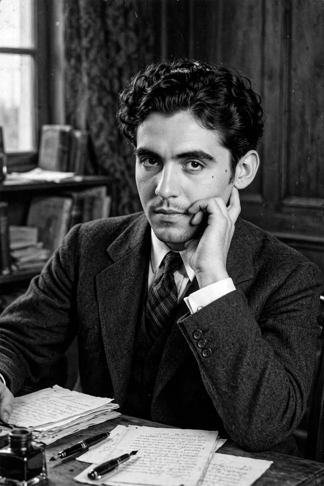

Blood Wedding (Spanish: Bodas de sangre) is a tragedy by the Spanish dramatist Federico García Lorca, written in 1932 and first performed in Madrid in 1933. Inspired by a newspaper report of a bride who ran away with a former lover on her wedding day in Almería, the play blends realistic dialogue with poetry, song and surreal symbolism — the Moon, Death as a beggar woman, and a chorus of woodcutters — to dramatise the collision of desire, honour and fate in rural Andalusia. It is the first of Lorca's "rural trilogy", followed by Yerma (1934) and The House of Bernarda Alba (1936).
| Written by | Federico García Lorca |
|---|---|
| Original title | Bodas de sangre |
| Language | Spanish |
| Written | 1932 |
| Premiered | 8 March 1933, Teatro Beatriz, Madrid |
| Genre | Tragedy |
| Characters | The Mother, the Bridegroom, the Bride, Leonardo, the Moon, Death |

In July 1928, near Níjar in the province of Almería, a young woman fled her wedding with her cousin and former sweetheart; the bridegroom's family pursued them and the cousin was killed. Lorca read the press reports and returned to the story four years later, stripping away names — the characters are known only as Mother, Bridegroom, Bride and the single named figure, Leonardo — to raise a local scandal into universal tragedy.
The Bridegroom's mother, whose husband and elder son were murdered by members of the Félix family, grudgingly blesses his marriage to a young woman from a distant farm. The Bride was once engaged to Leonardo Félix — of the family the Mother hates — who is now married with a child yet still rides out at night to gaze at her house. On the wedding day Leonardo is the first guest to arrive; after the ceremony the Bride flees with him on horseback. The Bridegroom pursues them through a moonlit forest where the Moon and Death conspire to expose the lovers. Leonardo and the Bridegroom kill each other. The play ends with the Mother, the Bride and Leonardo's widow confronting their desolation: the Mother resolves to endure her grief, while the Bride insists her honour is intact and begs to be killed, too.
The first two acts are written in a heightened prose close to realism; the forest scene of Act III breaks into verse and surreal pageant, with the Moon as a cold, blue-faced woodcutter longing for blood and Death disguised as a beggar woman guiding the pursuers. Recurring images of knives, horses, blood and the dry earth of Andalusia express Lorca's recurring subjects: thwarted desire, the tyranny of social codes, and death.
Blood Wedding premiered on 8 March 1933 at the Teatro Beatriz in Madrid and was performed in Buenos Aires the same year with great success by Lola Membrives's company. Suppressed after Lorca's murder in 1936 and the Franco regime, the play returned to Spanish stages after the dictatorship and is now among the most performed Spanish plays worldwide, in many translations and in operatic adaptation (Wolfgang Fortner's Bluts Hochzeit, 1957).